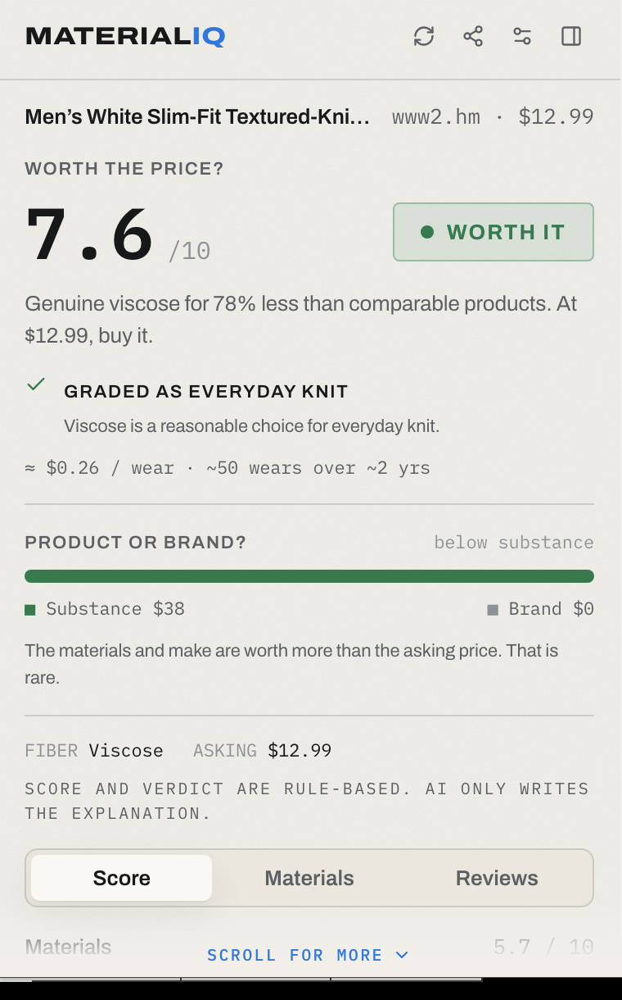
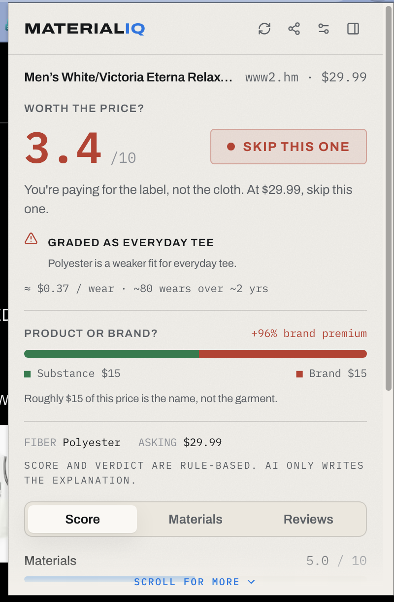
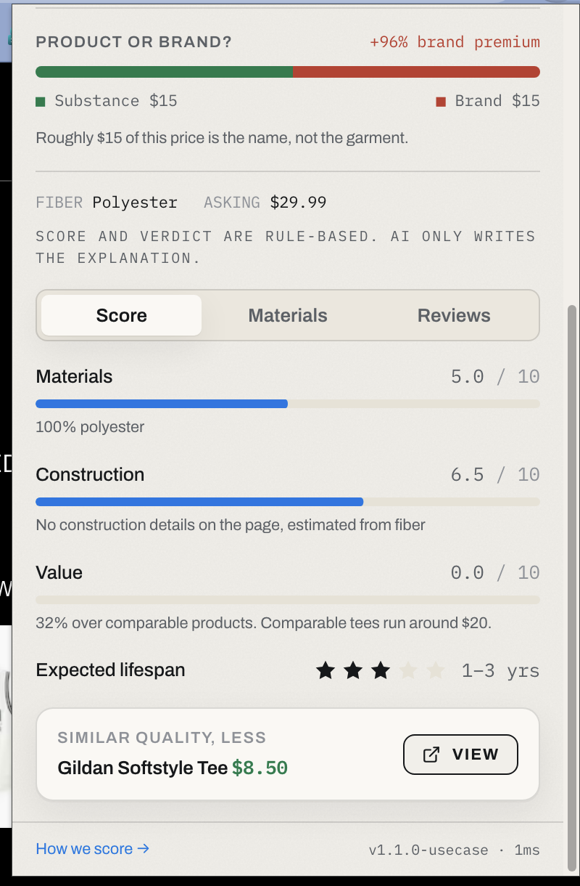

01. Product Integrity in the Shopping Cart
Online consumers face constant uncertainty when evaluating fabric blends, construction details, and pricing. Most buyers assume high quality, but struggle to verify material blends or construction markers before purchasing. MaterialIQ is designed to resolve this confusion by analyzing product specifications automatically and presenting a simple, unified quality score.
The extension works silently in the background, reading active tabs on popular retail sites. Rather than relying on simple reviews or marketing copy, it focuses on raw fabric data, fiber ratios, and manufacturing indicators to determine the actual standard of the item.
02. The Scoring Methodology
Instead of using arbitrary ratings, MaterialIQ calculates its score through a structured, rule-based process. This scoring engine breaks analysis down into three key areas:
1. Material Quality Score
Evaluates fiber ratios and composition details (such as the ratio of natural wool to synthetic blends or GSM weight parameters).
2. Durability Estimate
Assesses the construction indicators, weave types, and material durability traits to predict product lifespan.
3. Value Score
Calculates whether the asking price aligns with the material score, flagging overpriced items or highlighting high-value composition.
03. Project Architecture
The system divides responsibilities between a client-side Chrome extension and a lightweight backend API to maintain performance:
- Chrome Extension: Built using React, Vite, Tailwind CSS, and Manifest V3. It coordinates active tab data, updates the DOM sidebar injected onto retail pages, and manages the user dashboard.
- Backend API: Built using FastAPI and Python. It manages the deterministic scoring algorithms, processes text strings, and returns structured analysis payloads to the extension.
04. Walkthrough & Screen Gallery
Key interfaces showing the extension in action, highlighting calculations and user layout panels.

Extension sidebar, presenting composition breakdown and fabric recommendations
Scoring analysis, demonstrating natural versus synthetic fiber performance
Value assessment, graphing fabric durability against the asking price05. Reflection
Developing a scoring model that operates across highly irregular product data was a challenging exercise in data handling. By keeping the scoring logic structured and deterministic, the tool avoids black-box ambiguity. Shoppers can view exactly how every rating was reached.